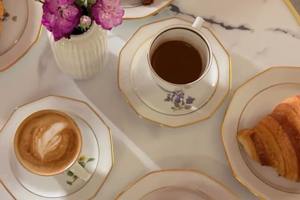

Menulla
Fikaa, voisarvia
ja viiniä
Aloita kupillisella kahvia. Meiltä voit kysyä, mikä leivonnainen sopisi tänään sen seuraksi.

Fikan aika
Voisarvet
Murra rapea kuori, niin pääset käsiksi pehmeään sisukseen. Kokeile kastaa sarven kärki kahviin.
Pullat ja makeat leivonnaiset
Kurkista vitriiniin. Pulla ja kaksi kupillista kahvia ovat hyvä syy istahtaa vaihtamaan kuulumisia.
Kahvi
Mustaa kahvia tai pehmeävaahtoinen cappuccino kukkakupista.
Viiniä laseittain
Mitä tänään kaadetaan?
Kerro, millaisesta viinistä pidät. Esittelemme avoinna olevat pullot ja autamme valitsemaan lasillisen.
Sesongissa
Tänään vitriinissä
Leivonnaisvalikoima vaihtuu sesongin mukaan. Poikkea Pietarinkadulle katsomaan, mitä tänään on tarjolla.
Löydä perille